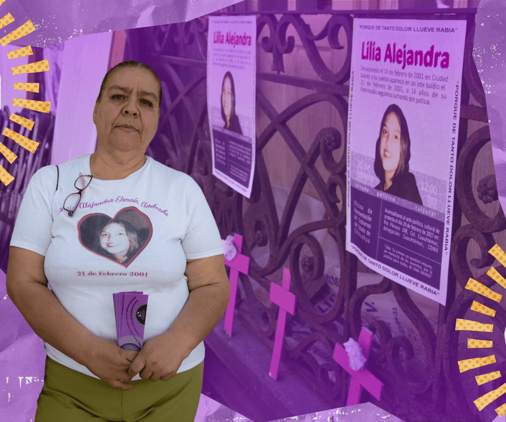
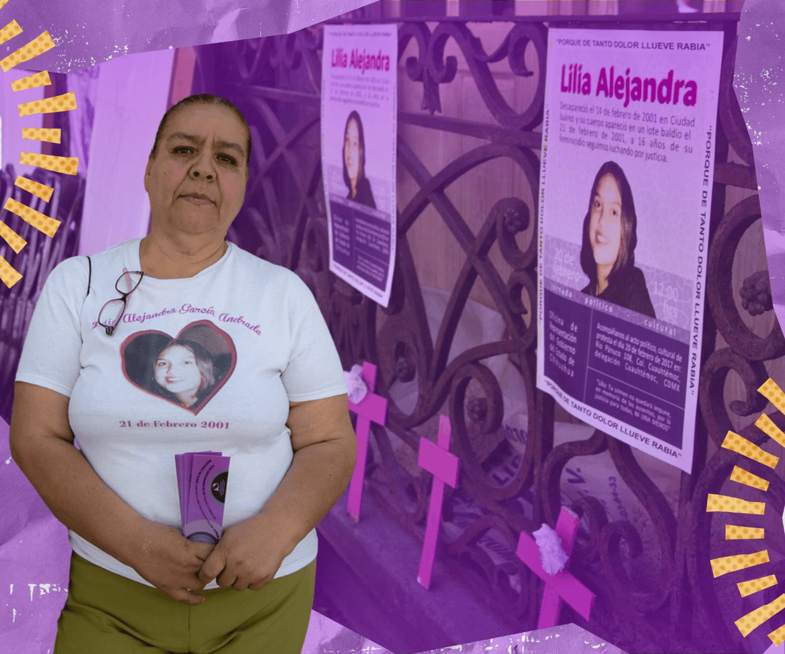

1993: Inicio en Ciudad Juárez
2001: Lilia Alejandra García Andrade
 

El feminicidio de Lilia Alejandra impulsa la lucha de su madre y visibiliza la crisis de desapariciones de mujeres en el norte de México. La movilización por su caso pone en evidencia las deficiencias en el sistema de justicia mexicano.
Proceso La Cadera de Eva2007: Ley General

Se publica la Ley General de Acceso de las Mujeres a una Vida Libre de Violencia, que establece un marco legal para la prevención, sanción y erradicación de la violencia de género, incluyendo el feminicidio como un delito específico.
Texto de la Ley INMUJERES2009: Caso Campo Algodonero

La Corte Interamericana de Derechos Humanos falla en contra del Estado mexicano por no investigar adecuadamente los feminicidios ocurridos en el campo algodonero de Ciudad Juárez, lo que representa un hito importante en el reconocimiento de los derechos humanos de las mujeres.
Corte IDH CNDH México2012: Feminicidio en Código Penal

El feminicidio es tipificado en el Código Penal Federal, estableciendo penas más severas para quienes cometan este delito. Esto marca un avance en la legislación mexicana al reconocer el feminicidio como un crimen de odio y violencia de género.
Código Penal Federal Justia México2022: Caso Debanhi Escobar

El caso de Debanhi Escobar, una joven que desaparece y es encontrada muerta, pone de nuevo en la palestra las fallas del sistema de justicia en México para investigar y sancionar los feminicidios. Su caso simboliza las luchas actuales por la justicia para las mujeres desaparecidas y asesinadas.
BBC Mundo El País